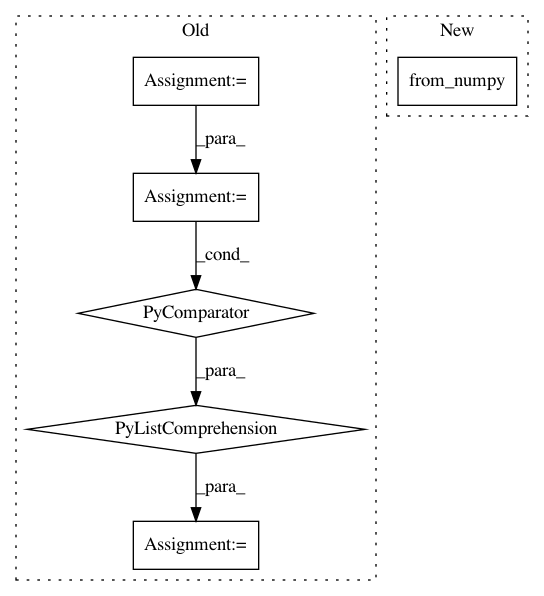

5510a7709e957615fb55397698f8e1c79cd5481b,torch_geometric/io/ply.py,,read_ply,#Any#,6
Before Change
def read_ply(path):
with open(path, "rb") as f:
data = PlyData.read(f)
pos = ([torch.tensor(data["vertex"][axis]) for axis in ["x", "y", "z"]])
pos = torch.stack(pos, dim=-1)
face = None
if "face" in data:
After Change
def read_ply(path):
mesh = openmesh.read_trimesh(path)
pos = torch.from_numpy(mesh.points()).to(torch.float)
face = torch.from_numpy(mesh.face_vertex_indices())
face = face.t().to(torch.long).contiguous()
In pattern: SUPERPATTERN
Frequency: 3
Non-data size: 6
Instances
Project Name: rusty1s/pytorch_geometric
Commit Name: 5510a7709e957615fb55397698f8e1c79cd5481b
Time: 2020-07-01
Author: matthias.fey@tu-dortmund.de
File Name: torch_geometric/io/ply.py
Class Name:
Method Name: read_ply
Project Name: facebookresearch/Horizon
Commit Name: 8dcbf002d0058939802920c11f74791708838791
Time: 2018-04-06
Author: edoardoc@fb.com
File Name: ml/rl/training/ddpg_predictor.py
Class Name: DDPGPredictor
Method Name: predict_q_value
Project Name: ncullen93/torchsample
Commit Name: 6ddf825a4aa1bcf3a35bba8d36bc433fe5ebaa39
Time: 2017-04-24
Author: ncullen@Nicks-MacBook-Pro.local
File Name: torchsample/utils.py
Class Name:
Method Name: th_iterproduct